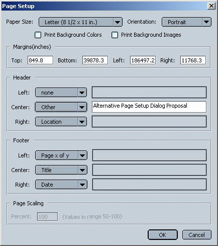

Page Setup (BE and FE)
Detailed Description
This feature involves adding a new "Page Setup..." choice to the main menu under File, at the beginning of the section with Print... (and the new Print Preview...). This menu choice, when selected, will open a modal "Page Setup" dialog that will prompt for page printing options:
- Page header
- Page footer
- Page numbering
- Margins
- Orientation
- Frame printing options
These options correspond to the various methods and attributes of the nsIPrintOptions interface. The implementation will simply pre-fill the dialog from the current print options, and after the user selects Ok, will set the new option values back into that object (it is a service).
Update: 2002 Jan 02
The initial Page Setup dialog has been completed (thanks to Rod Spears). See bug 113917. There are some bugs, which will be handled in the usual fashion (and not addressed here). The consensus seems to be that the dialog has to make it easier for users to specify the cryptic "&PT"-like codes in the page header and footer.
Here is an initial draft of a revised dialog that does that:

The remaining effort to implement this revised dialog is described below.
Tasks
Add new "Page Setup..." menu choice to Navigator menu. 1 dayWrite new "page setup dialog" xul/js. 4 days- Implement changes for revised dialog. 2 days
Issues
The various lower-level (back end) printing interfaces seem to be in a bit of flux (e.g., there's also a nsIPrintSettings interface that looks to be identical to nsIPrintOptions and I don't know what that's about).